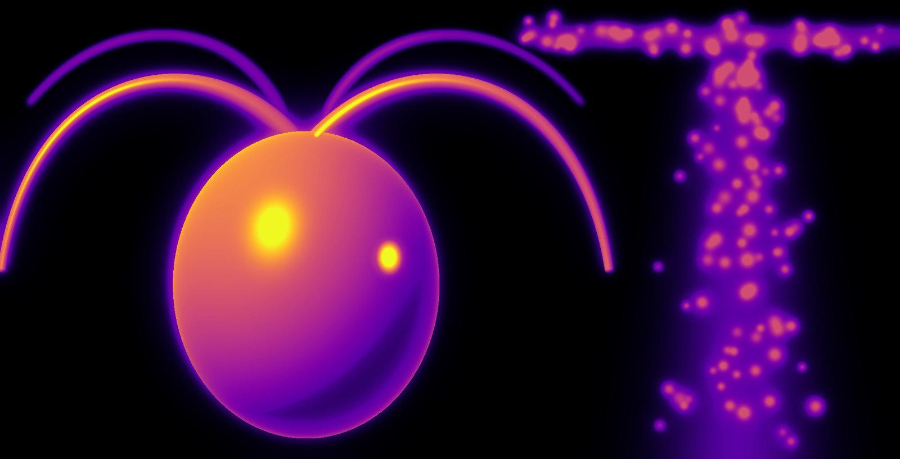

M1/M2 internship · Out of breath
What happens to a swimming suspension when the algae make their own water anoxic?
Bioconvection plumes of Chlamydomonas stir the water that feeds them. Couple the cells' oxygen consumption to the flow in a continuum model, simulate it in Basilisk, and compare with the experiments of Hélène de Maleprade.
